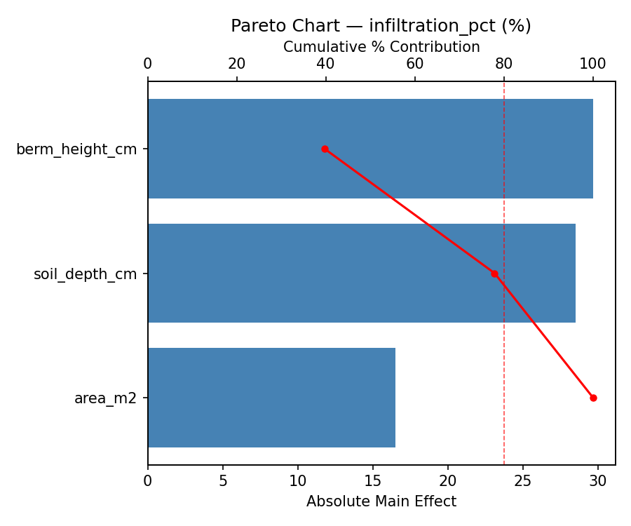
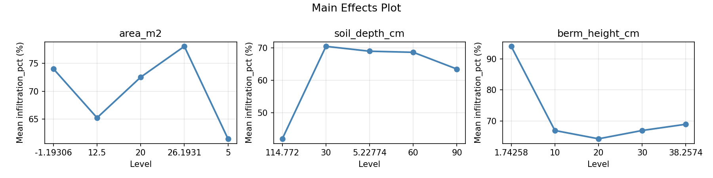
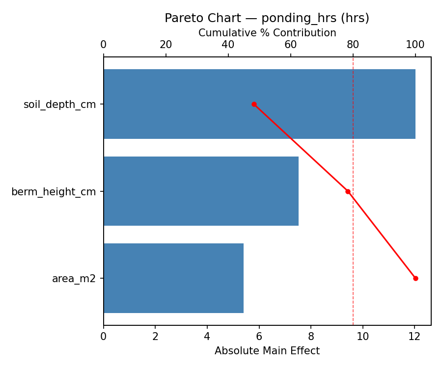
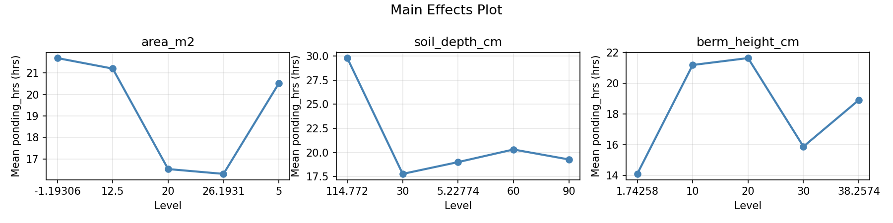
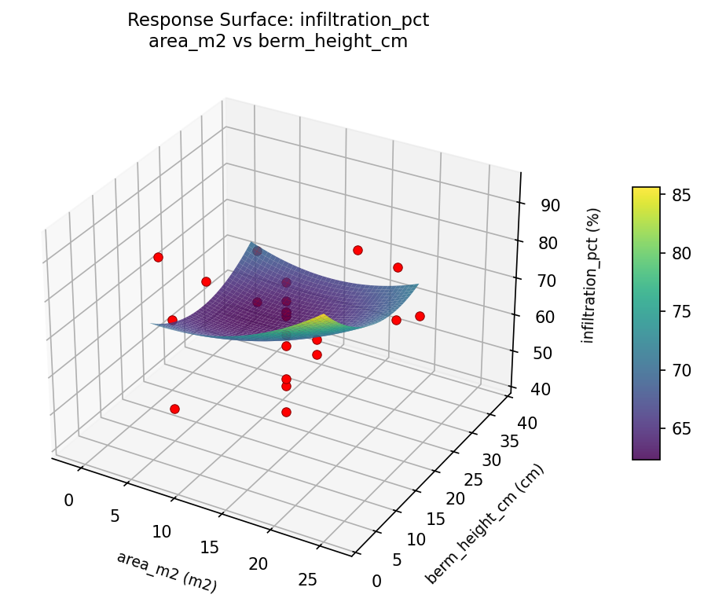
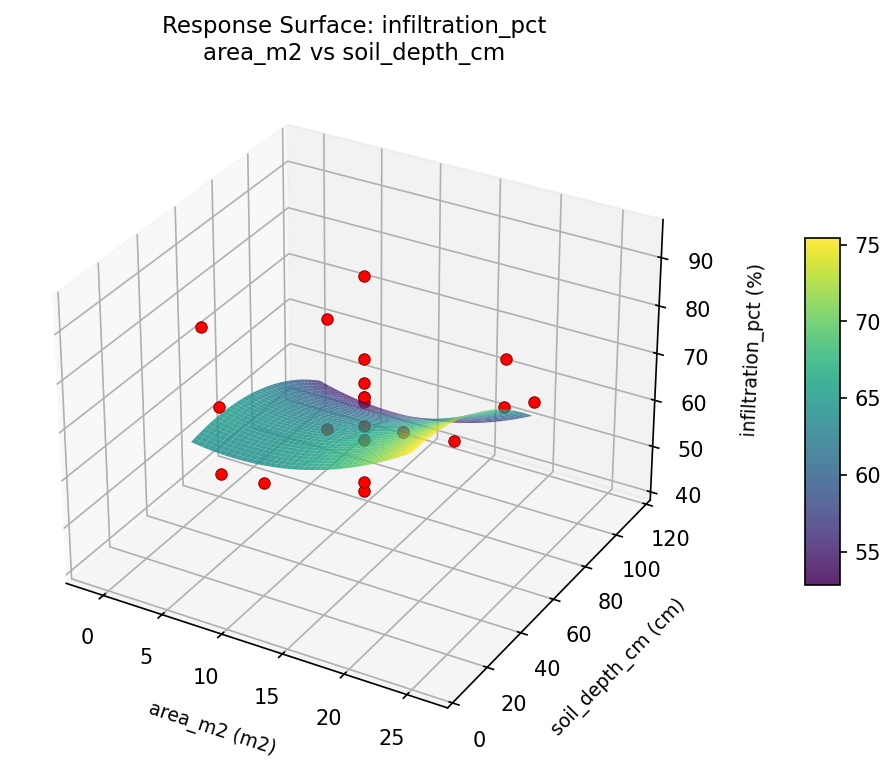
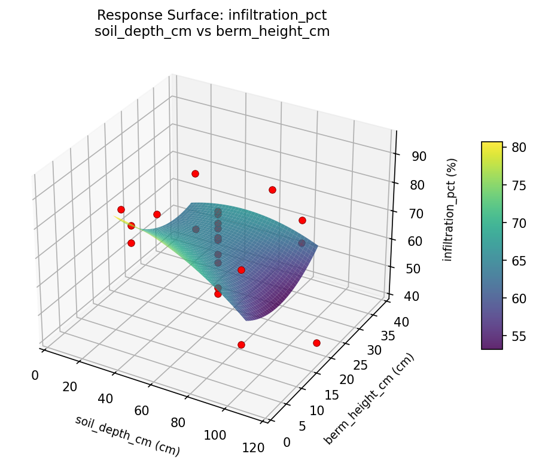
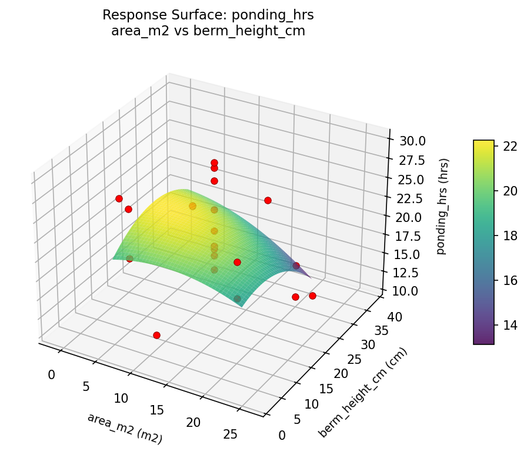
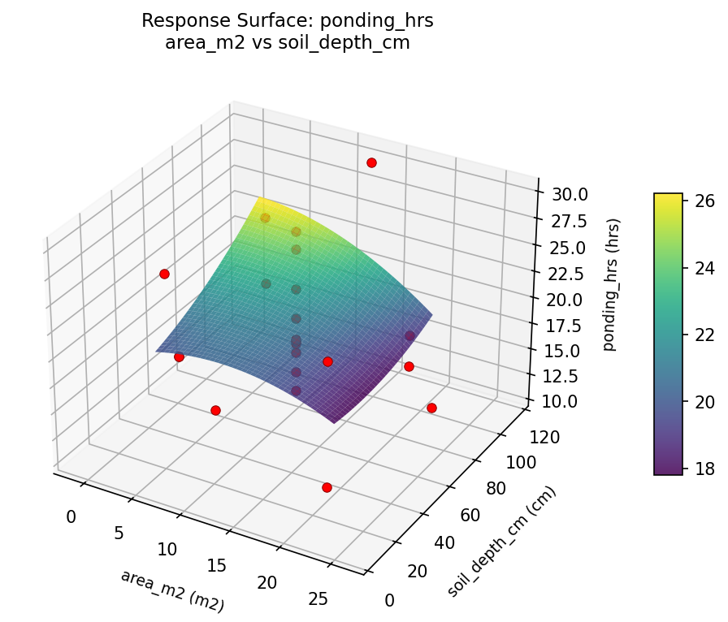
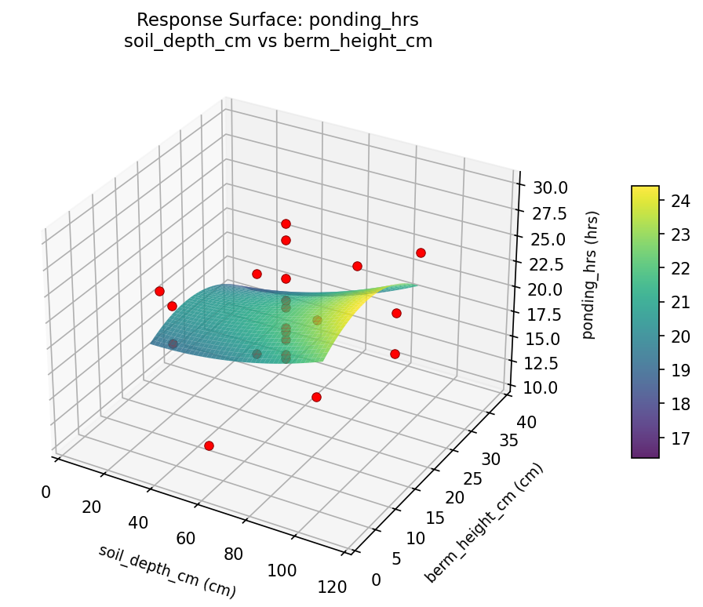

Summary
This experiment investigates rain garden design. Central composite design to maximize stormwater infiltration and minimize ponding time by tuning garden area, soil depth, and berm height.
The design varies 3 factors: area m2 (m2), ranging from 5 to 20, soil depth cm (cm), ranging from 30 to 90, and berm height cm (cm), ranging from 10 to 30. The goal is to optimize 2 responses: infiltration pct (%) (maximize) and ponding hrs (hrs) (minimize). Fixed conditions held constant across all runs include drainage area m2 = 200, soil type = sandy_loam.
A Central Composite Design (CCD) was selected to fit a full quadratic response surface model, including curvature and interaction effects. With 3 factors this produces 22 runs including center points and axial (star) points that extend beyond the factorial range.
Quadratic response surface models were fitted to capture potential curvature and factor interactions. The RSM contour plots below visualize how pairs of factors jointly affect each response.
Key Findings
For infiltration pct, the most influential factors were berm height cm (39.7%), soil depth cm (38.2%), area m2 (22.1%). The best observed value was 94.0 (at area m2 = -1.19306, soil depth cm = 60, berm height cm = 20).
For ponding hrs, the most influential factors were soil depth cm (48.2%), berm height cm (30.2%), area m2 (21.6%). The best observed value was 10.7 (at area m2 = 12.5, soil depth cm = 60, berm height cm = 20).
Recommended Next Steps
- Run confirmation experiments at the predicted optimal settings to validate the model.
- Consider whether any fixed factors should be varied in a future study.
Experimental Setup
Factors
| Factor | Low | High | Unit |
|---|
area_m2 | 5 | 20 | m2 |
soil_depth_cm | 30 | 90 | cm |
berm_height_cm | 10 | 30 | cm |
Fixed: drainage_area_m2 = 200, soil_type = sandy_loam
Responses
| Response | Direction | Unit |
|---|
infiltration_pct | ↑ maximize | % |
ponding_hrs | ↓ minimize | hrs |
Configuration
{
"metadata": {
"name": "Rain Garden Design",
"description": "Central composite design to maximize stormwater infiltration and minimize ponding time by tuning garden area, soil depth, and berm height"
},
"factors": [
{
"name": "area_m2",
"levels": [
"5",
"20"
],
"type": "continuous",
"unit": "m2"
},
{
"name": "soil_depth_cm",
"levels": [
"30",
"90"
],
"type": "continuous",
"unit": "cm"
},
{
"name": "berm_height_cm",
"levels": [
"10",
"30"
],
"type": "continuous",
"unit": "cm"
}
],
"fixed_factors": {
"drainage_area_m2": "200",
"soil_type": "sandy_loam"
},
"responses": [
{
"name": "infiltration_pct",
"optimize": "maximize",
"unit": "%"
},
{
"name": "ponding_hrs",
"optimize": "minimize",
"unit": "hrs"
}
],
"settings": {
"operation": "central_composite",
"test_script": "use_cases/136_rain_garden_sizing/sim.sh"
}
}
Experimental Matrix
The Central Composite Design produces 22 runs. Each row is one experiment with specific factor settings.
| Run | area_m2 | soil_depth_cm | berm_height_cm |
|---|
| 1 | 12.5 | 60 | 20 |
| 2 | 20 | 30 | 30 |
| 3 | 5 | 90 | 10 |
| 4 | 12.5 | 114.772 | 20 |
| 5 | 12.5 | 60 | 20 |
| 6 | -1.19306 | 60 | 20 |
| 7 | 12.5 | 60 | 1.74258 |
| 8 | 12.5 | 60 | 20 |
| 9 | 20 | 90 | 10 |
| 10 | 26.1931 | 60 | 20 |
| 11 | 12.5 | 60 | 20 |
| 12 | 12.5 | 5.22774 | 20 |
| 13 | 12.5 | 60 | 20 |
| 14 | 5 | 30 | 30 |
| 15 | 12.5 | 60 | 20 |
| 16 | 20 | 30 | 10 |
| 17 | 12.5 | 60 | 38.2574 |
| 18 | 20 | 90 | 30 |
| 19 | 12.5 | 60 | 20 |
| 20 | 5 | 30 | 10 |
| 21 | 5 | 90 | 30 |
| 22 | 12.5 | 60 | 20 |
Step-by-Step Workflow
1
Preview the design
$ python doe.py info --config use_cases/136_rain_garden_sizing/config.json
2
Generate the runner script
$ python doe.py generate --config use_cases/136_rain_garden_sizing/config.json \
--output use_cases/136_rain_garden_sizing/results/run.sh --seed 42
3
Execute the experiments
$ bash use_cases/136_rain_garden_sizing/results/run.sh
4
Analyze results
$ python doe.py analyze --config use_cases/136_rain_garden_sizing/config.json
5
Get optimization recommendations
$ python doe.py optimize --config use_cases/136_rain_garden_sizing/config.json
6
Generate the HTML report
$ python doe.py report --config use_cases/136_rain_garden_sizing/config.json \
--output use_cases/136_rain_garden_sizing/results/report.html
Features Exercised
| Feature | Value |
|---|
| Design type | central_composite |
| Factor types | continuous (all 3) |
| Arg style | double-dash |
| Responses | 2 (infiltration_pct ↑, ponding_hrs ↓) |
| Total runs | 22 |
Analysis Results
Generated from actual experiment runs using the DOE Helper Tool.
Response: infiltration_pct
Top factors: berm_height_cm (39.7%), soil_depth_cm (38.2%), area_m2 (22.1%).
Pareto Chart

Main Effects Plot

Response: ponding_hrs
Top factors: soil_depth_cm (48.2%), berm_height_cm (30.2%), area_m2 (21.6%).
Pareto Chart

Main Effects Plot

Response Surface Plots
3D surfaces fitted with quadratic RSM. Red dots are observed data points.
infiltration pct area m2 vs berm height cm

infiltration pct area m2 vs soil depth cm

infiltration pct soil depth cm vs berm height cm

ponding hrs area m2 vs berm height cm

ponding hrs area m2 vs soil depth cm

ponding hrs soil depth cm vs berm height cm

Full Analysis Output
RSM surface: rsm_infiltration_pct_area_m2_vs_soil_depth_cm.png
RSM surface: rsm_infiltration_pct_area_m2_vs_berm_height_cm.png
RSM surface: rsm_infiltration_pct_soil_depth_cm_vs_berm_height_cm.png
RSM surface: rsm_ponding_hrs_area_m2_vs_soil_depth_cm.png
RSM surface: rsm_ponding_hrs_area_m2_vs_berm_height_cm.png
RSM surface: rsm_ponding_hrs_soil_depth_cm_vs_berm_height_cm.png
=== Main Effects: infiltration_pct ===
Factor Effect Std Error % Contribution
--------------------------------------------------------------
berm_height_cm 29.6667 2.5864 39.7%
soil_depth_cm 28.5000 2.5864 38.2%
area_m2 16.5000 2.5864 22.1%
=== Summary Statistics: infiltration_pct ===
area_m2:
Level N Mean Std Min Max
------------------------------------------------------------
-1.19306 1 74.0000 0.0000 74.0000 74.0000
12.5 12 65.2500 13.8178 42.0000 94.0000
20 4 72.5000 6.6081 63.0000 77.0000
26.1931 1 78.0000 0.0000 78.0000 78.0000
5 4 61.5000 11.7047 47.0000 71.0000
soil_depth_cm:
Level N Mean Std Min Max
------------------------------------------------------------
114.772 1 42.0000 0.0000 42.0000 42.0000
30 4 70.5000 9.4340 57.0000 77.0000
5.22774 1 69.0000 0.0000 69.0000 69.0000
60 12 68.6667 12.2276 49.0000 94.0000
90 4 63.5000 11.8181 47.0000 73.0000
berm_height_cm:
Level N Mean Std Min Max
------------------------------------------------------------
1.74258 1 94.0000 0.0000 94.0000 94.0000
10 4 67.0000 13.5647 47.0000 77.0000
20 12 64.3333 11.6333 42.0000 78.0000
30 4 67.0000 8.7939 57.0000 77.0000
38.2574 1 69.0000 0.0000 69.0000 69.0000
=== Main Effects: ponding_hrs ===
Factor Effect Std Error % Contribution
--------------------------------------------------------------
soil_depth_cm 12.0250 1.0234 48.2%
berm_height_cm 7.5250 1.0234 30.2%
area_m2 5.4000 1.0234 21.6%
=== Summary Statistics: ponding_hrs ===
area_m2:
Level N Mean Std Min Max
------------------------------------------------------------
-1.19306 1 21.7000 0.0000 21.7000 21.7000
12.5 12 21.2083 5.1755 14.1000 29.8000
20 4 16.5250 5.0122 10.7000 22.6000
26.1931 1 16.3000 0.0000 16.3000 16.3000
5 4 20.5250 3.1837 18.9000 25.3000
soil_depth_cm:
Level N Mean Std Min Max
------------------------------------------------------------
114.772 1 29.8000 0.0000 29.8000 29.8000
30 4 17.7750 5.0288 10.7000 22.6000
5.22774 1 19.0000 0.0000 19.0000 19.0000
60 12 20.3083 4.5783 14.1000 29.1000
90 4 19.2750 4.3745 14.9000 25.3000
berm_height_cm:
Level N Mean Std Min Max
------------------------------------------------------------
1.74258 1 14.1000 0.0000 14.1000 14.1000
10 4 21.1750 3.4131 17.9000 25.3000
20 12 21.6250 4.8715 15.9000 29.8000
30 4 15.8750 3.9432 10.7000 19.0000
38.2574 1 18.9000 0.0000 18.9000 18.9000
Pareto chart (infiltration_pct): use_cases/136_rain_garden_sizing/results/analysis/pareto_infiltration_pct.png
Pareto chart (ponding_hrs): use_cases/136_rain_garden_sizing/results/analysis/pareto_ponding_hrs.png
Main effects (infiltration_pct): use_cases/136_rain_garden_sizing/results/analysis/main_effects_infiltration_pct.png
Main effects (ponding_hrs): use_cases/136_rain_garden_sizing/results/analysis/main_effects_ponding_hrs.png
Optimization Recommendations
=== Optimization: infiltration_pct ===
Direction: maximize
Best observed run: #18
area_m2 = -1.19306
soil_depth_cm = 60
berm_height_cm = 20
Value: 94.0
RSM Model (linear, R² = 0.2488, Adj R² = 0.1236):
Coefficients:
intercept +66.8636
area_m2 -6.8734
soil_depth_cm -2.2144
berm_height_cm +0.5367
RSM Model (quadratic, R² = 0.5473, Adj R² = 0.2078):
Coefficients:
intercept +64.9031
area_m2 -6.8734
soil_depth_cm -2.2144
berm_height_cm +0.5367
area_m2*soil_depth_cm -5.3750
area_m2*berm_height_cm -6.8750
soil_depth_cm*berm_height_cm -5.3750
area_m2^2 -0.0197
soil_depth_cm^2 +1.4803
berm_height_cm^2 +1.4803
Curvature analysis:
berm_height_cm coef=+1.4803 convex (has a minimum)
soil_depth_cm coef=+1.4803 convex (has a minimum)
area_m2 coef=-0.0197 negligible curvature
Notable interactions:
area_m2*berm_height_cm coef=-6.8750 (antagonistic)
area_m2*soil_depth_cm coef=-5.3750 (antagonistic)
soil_depth_cm*berm_height_cm coef=-5.3750 (antagonistic)
Predicted optimum (from quadratic model):
area_m2 = 5
soil_depth_cm = 30
berm_height_cm = 30
Predicted value: 84.3433
Model quality: Moderate fit — use predictions directionally, not precisely.
Factor importance:
1. area_m2 (effect: 47.0, contribution: 57.8%)
2. soil_depth_cm (effect: 17.2, contribution: 21.2%)
3. berm_height_cm (effect: 17.0, contribution: 20.9%)
=== Optimization: ponding_hrs ===
Direction: minimize
Best observed run: #9
area_m2 = 12.5
soil_depth_cm = 60
berm_height_cm = 20
Value: 10.7
RSM Model (linear, R² = 0.1723, Adj R² = 0.0344):
Coefficients:
intercept +20.0318
area_m2 +2.3624
soil_depth_cm +0.3107
berm_height_cm +0.0901
RSM Model (quadratic, R² = 0.5714, Adj R² = 0.2500):
Coefficients:
intercept +19.3213
area_m2 +2.3624
soil_depth_cm +0.3107
berm_height_cm +0.0901
area_m2*soil_depth_cm +3.1500
area_m2*berm_height_cm +1.6750
soil_depth_cm*berm_height_cm +2.7250
area_m2^2 +0.3703
soil_depth_cm^2 +1.1053
berm_height_cm^2 -0.4097
Curvature analysis:
soil_depth_cm coef=+1.1053 convex (has a minimum)
berm_height_cm coef=-0.4097 concave (has a maximum)
area_m2 coef=+0.3703 convex (has a minimum)
Notable interactions:
area_m2*soil_depth_cm coef=+3.1500 (synergistic)
soil_depth_cm*berm_height_cm coef=+2.7250 (synergistic)
area_m2*berm_height_cm coef=+1.6750 (synergistic)
Predicted optimum (from quadratic model):
area_m2 = 20
soil_depth_cm = 90
berm_height_cm = 30
Predicted value: 30.7002
Model quality: Moderate fit — use predictions directionally, not precisely.
Factor importance:
1. area_m2 (effect: 11.2, contribution: 56.5%)
2. berm_height_cm (effect: 5.0, contribution: 25.2%)
3. soil_depth_cm (effect: 3.6, contribution: 18.3%)